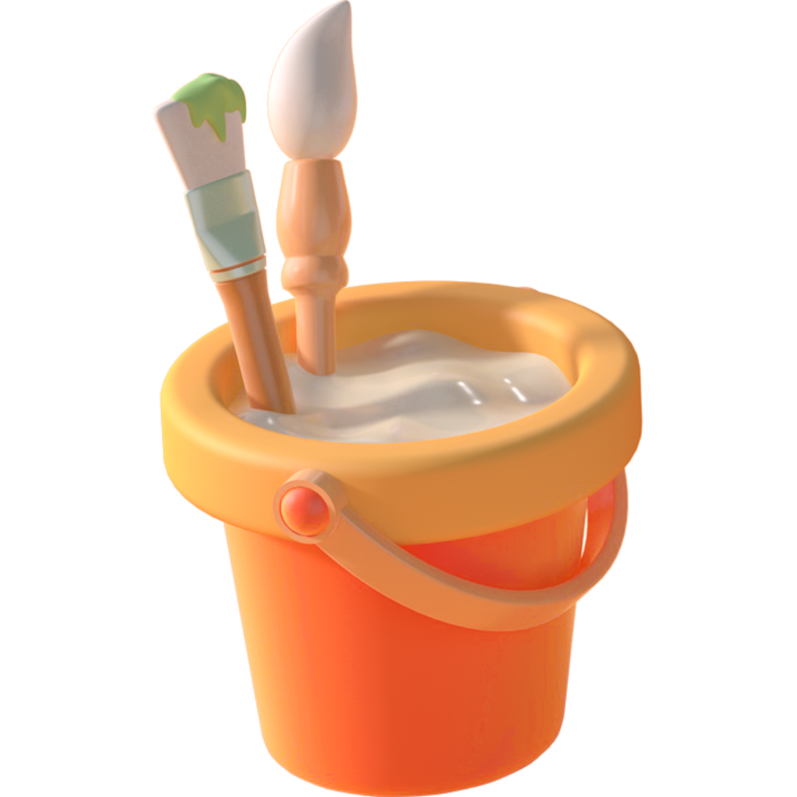

definitionnoun
pint
/pīnt/

a unit of measurement for liquid or dry volume that equals one-eighth of a gallon.about half a litre.
why paint-a-pint?
because you can paint a lot.
as much as you want.
even a pint.
no tubes to buy, no brushes to wash. zero cost, zero cleanup.
lets you paint as much as you want. even a pint.